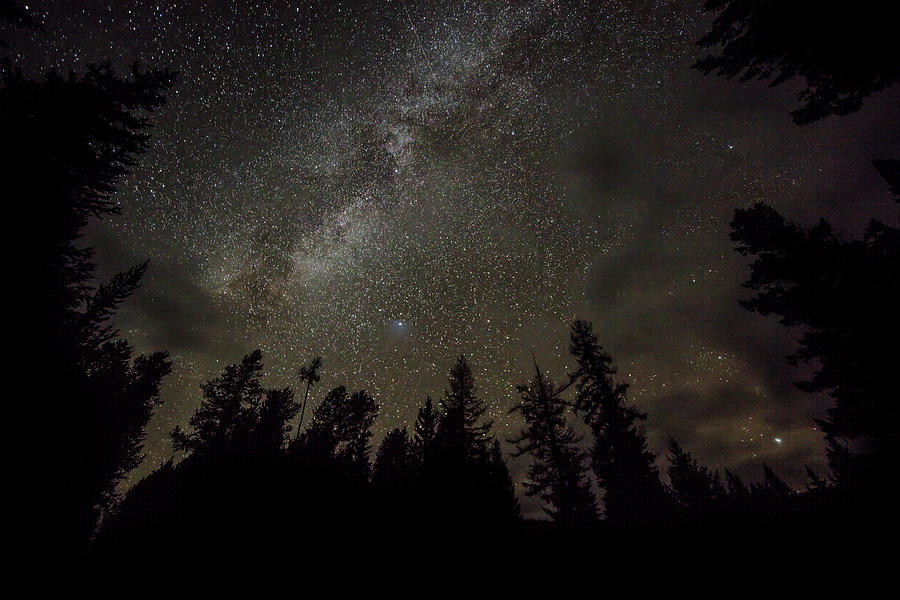
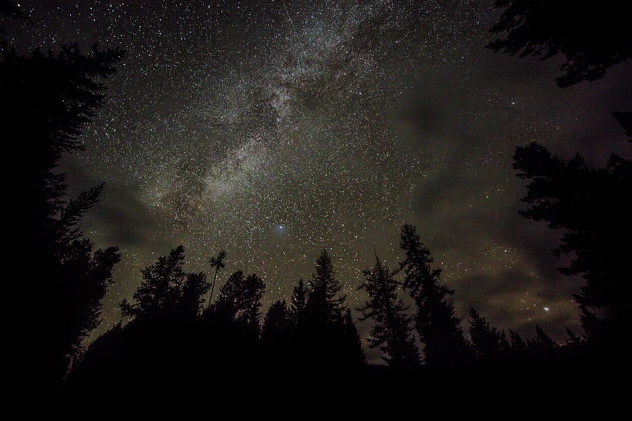

LIGHT POLLUTION
The excessive or inappropriate use of outdoor artificial light, is affecting human health, wildlife behavior, and our ability to observe stars and other celestial objects
LIGHT POLLUTION MAP
LEARN MORE

National Wildlife: "How Light Pollution Impacts Wildlife & How You Can Help"
Many animals are displaced by articial light, including sea turtle hatchlings. On beaches adjacent to roads and buildings, many emerging hatchlings head inland toward artificial lights instead of the ocean.
DarkSky International: "How You Can Help"
DarkSky International restores the nighttime environment and protects communities from the harmful effects of light pollution through outreach, advocacy, and conservation.